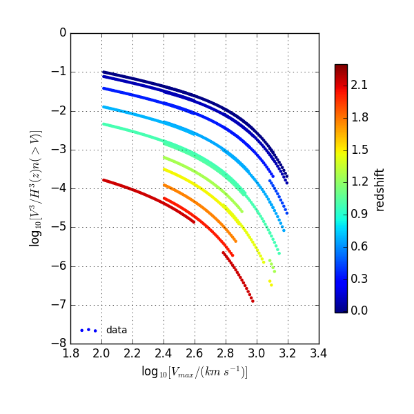

|  |
One point functions in the MultiDark simulation suite: M200c, Vmax, Density field |
| N-body cosmological simulations are an essential tool to understand the observed distribution of galaxies. Simulations with different cosmological parameters provide different 1 point and 2 point functions of halos. In the paradigm of the flat Lambda Cold Dark Matter cosmology as measured by Planck in 2014, and to derive precise cosmological measurement with the upcoming large scale structure surveys, it is necessary to have a more accurate description of the mass function. In this aim, we use the suite of MultiDark simulations, run with the Planck cosmological parameters, to revisit the halo mass function. We improve analytical models of the mass function by treating central (satellite) halos separately and provide fits the reproduce it at M200c within 5% (10%). In the future, these fits will be very useful to calibrate further the HOD model and increase the accuracy of its predictions. |
| Please click here to access the 1-pt functions measured. |
|
Acknowledgement
If you use these functions, please cite XX et al. 201X XX et al. 201X . |
|
Links
cosmoSim the MultiDark database XX . |
last update, Sept. 2016.